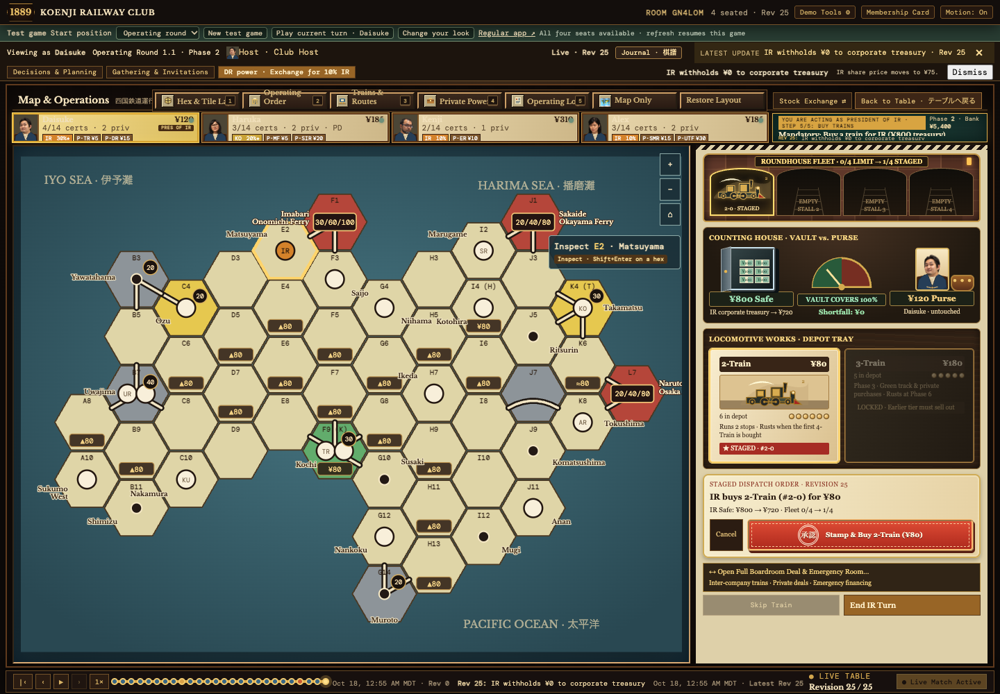
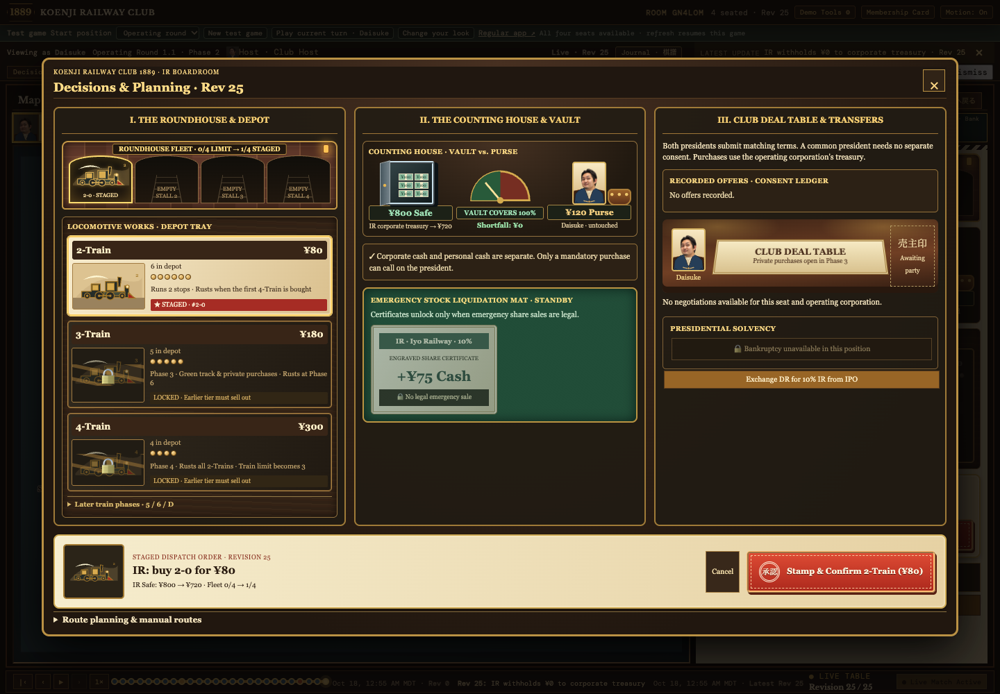
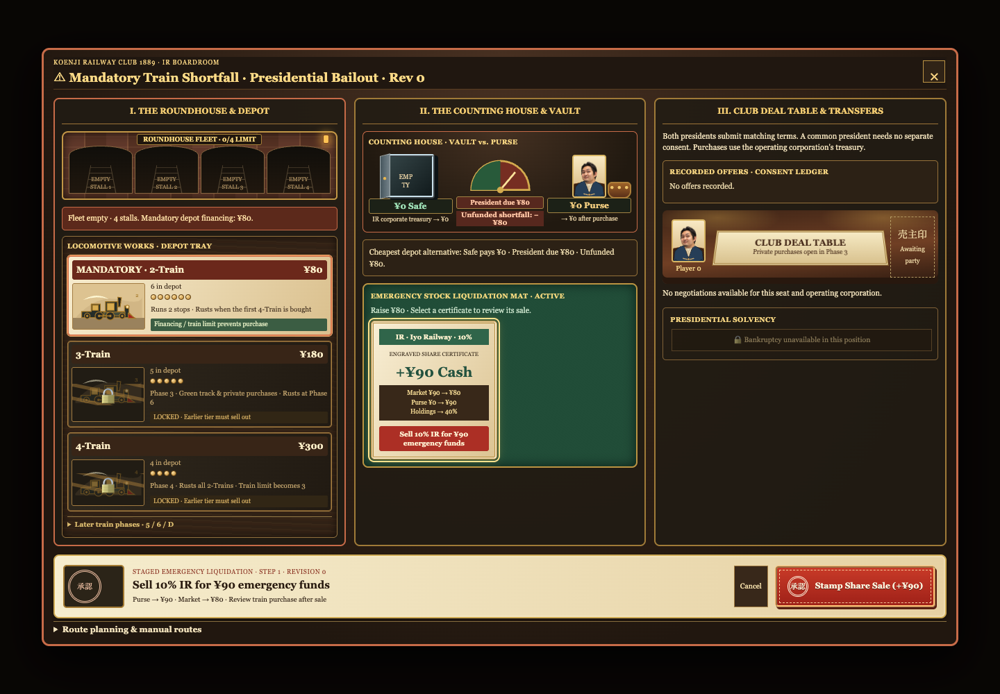
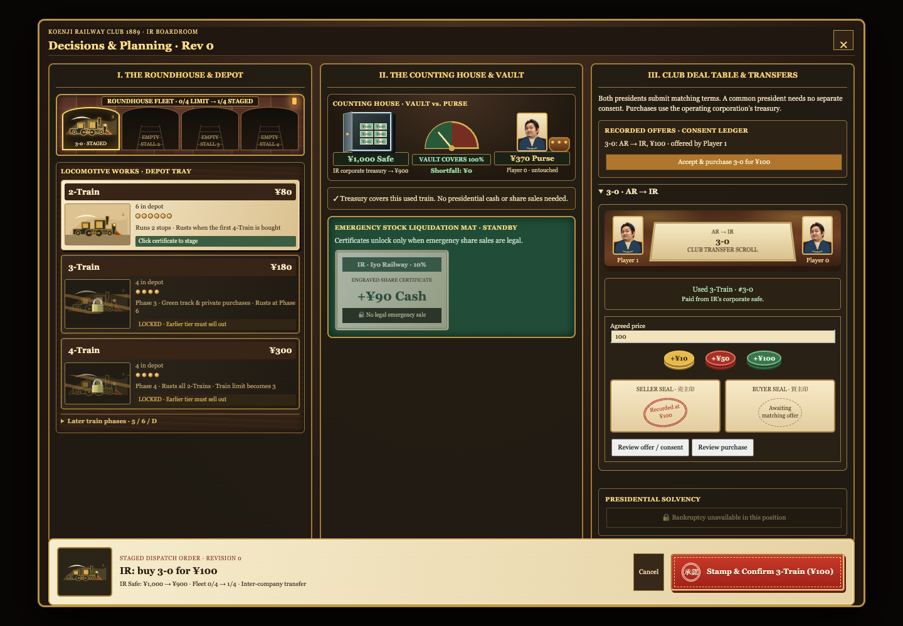
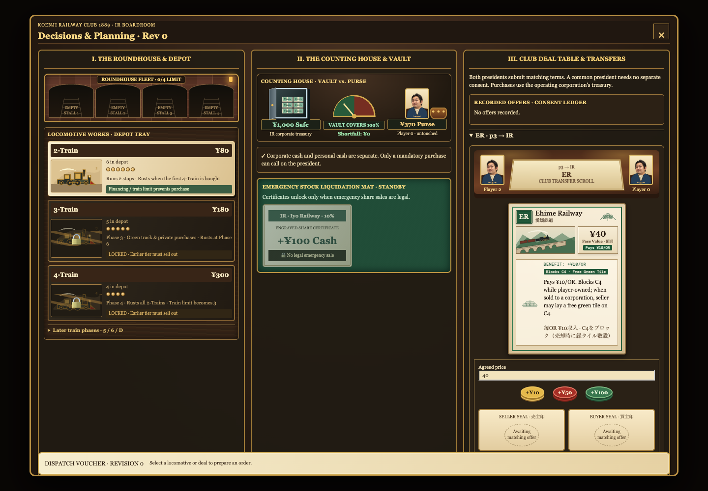
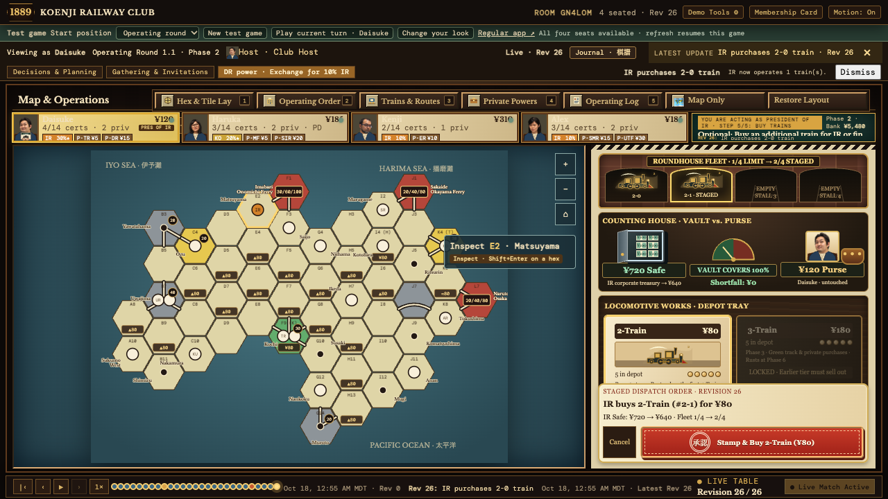
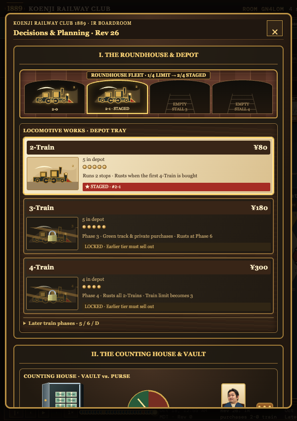

Train Desk — Implemented Workflow
October 18, 2026 · Validation captures from the local application and real engine projections. Fixture balances follow game state; the proposal's example figures are not hardcoded.
- Production build passed.
- 67 JavaScript regressions passed, including inline stamping, stale revisions, automatic shortfall opening, and phase/rust/trade-in previews.
- 30 Python application tests and 20 engine tests passed.
- Browser checks passed for a live inline depot purchase, emergency sale dispatch, recorded used-train acceptance, price chips, private-card rendering, and narrow-dialog layout. Emergency and used-train dispatch checks use engine fixtures with a local submission recorder.
Default Step 5 — map stays visible
Browser capture from the local operating test game; purchase stamped directly from the dock.

Three-column boardroom
Roundhouse and depot, counting house and vault, and club deal table.

Emergency share liquidation
Real engine fixture values; staged certificate sale with authoritative purse and market previews.

Recorded used-train transfer
Real engine fixture with a recorded seller offer, matching price, and buyer dispatch voucher.

Illustrated private-company deal
Existing illustrated private-company card, price chips, and two-party consent ledger.

Compact viewport — 1280 × 720
The Hanko voucher remains visible while the dock scrolls.

Narrow viewport — 600 × 850
Boardroom columns stack; the dialog has no horizontal overflow.
